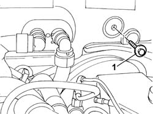
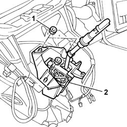
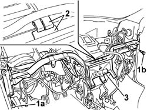

7040A98 INSTRUMENT FACIA TRIM SUPPORT BEAM - R R WITH FACIA REMOVED
- Path
- Procedures > 70 FITTINGS > 7040 BODY INTERIOR FITTINGS AND TRIM > 7040A PASSENGER COMPARTMENT TRIMS > 7040A98 INSTRUMENT FACIA TRIM SUPPORT BEAM - R R WITH FACIA REMOVED
- Kind
- repair procedure (removal / refitting; the operation number is the code)
- Applies to
- all engines; all production periods
- Interactive page
- https://sloeber94.github.io/elrnDB-fUlss/en/#/179007802
Applies to: all engines; all production periods
 Removing
Removing
 Refitting
RefittingOp. 5010B18 CLIMATE CONTROL UNIT AIR INTAKE - R.R.
1. Undo the fixing bolts in the engine compartment.

Applies to: all engines; all production periods
Op. 5010B24 UNDER-FACIA AIR DUCTS R R
1. Undo the retaining nuts.
2. Place the gear selector and engagement lever mounting assembly at the side.

Applies to: all engines; all production periods
- Disconnect the remaining electrical connections for the dashboard wiring.
- Loosen the bolt fixing the air conditioner casing to the floor.
1. Undo the fixing bolts (1a) and (1b).
2. Raise the dashboard supporting crossmember slightly, releasing it from the fastening on the air conditioner casing.
3. Remove the dashboard supporting crossmember complete with dashboard wiring.

Applies to: all engines; all production periods
- Release the dashboard wiring from the fastenings on the dashboard supporting crossmember and remove it.
Applies to: all engines; all production periods
Refitting
Removing- Position the dashboard wiring on the dashboard supporting crossmember and renew the fastenings.
- Position the dashboard supporting crossmember complete with dashboard wiring and secure it to the side fastenings and to the air conditioner casing.
- Tighten the retaining bolts.
- Tighten the bolt fixing the air conditioner casing to the floor to torque.
- Connect the electrical connections disconnected previously.
- Position the gear selector and engagement lever mounting assembly and tighten the fixing nuts.
Op. 5010B24 UNDER-FACIA AIR DUCTS R R
- Tighten the fixing bolts in the engine compartment to torque.
Topics linked from this page (1)
Topics that link to this page (11)
- 5010B39 FRONT CONNECTION FOR CENTRAL AIR DUCT TO REAR SEATS - R R
- 5010B45 DUCT FROM CLIMATE CONTROL SYSTEM - R R
- 5040C13 AIR CONDITIONER HEATER/DISTRIBUTOR ASSEMBLY - R R
- 5040C22 AIR CONDITIONING FAN ASSEMBLY - R.R.
- 5040C50 AIR CONDITIONING HEATER RADIATOR - R.R.
- 5040C64 A/C MANUAL CONTROL SWITCH (ONE) - R+R
- 5040D75 AIR CONDITIONING RECIRCULATION FLAP CONTROL MOTOR - R.R.
- 5040D90 AIR CONDITIONER SYSTEM WIRING BUNDLE - R R
- 5505C30 UNDER-FACIA WIRING - R R
- 7040A97 FACIA TRIM SUPPORT BEAM - R R
- 7040L17 PASSENGER COMPARTMENT FLOOR FRONT CARPET - R R